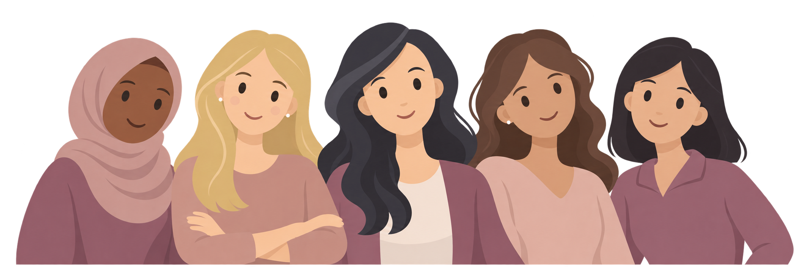

01
Anmäl ditt intresse
Klicka på ”Mejla oss” och skicka ett mejl till projektgruppen.
Vi är fem masterstudenter i hälsoinformatik vid Karolinska Institutet. I ett kursprojekt undersöker vi hur personer med olika språkbakgrund upplever 1177 Journalen.
Jag vill deltaEtt kursprojekt vid Karolinska Institutet
Masterprogrammet i hälsoinformatik
Med människan i fokusDigitala vårdtjänster har blivit en viktig del av vår vardag. Genom 1177 Journalen kan vi läsa information om vår hälsa, ta del av provsvar och följa vår vård.
Men upplever alla tjänsten på samma sätt?
I Sverige har många människor ett annat modersmål än svenska. Språket kan påverka hur vi upplever digitala vårdtjänster, exempelvis hur enkelt det är att hitta information, förstå innehållet och använda tjänsten.
I vårt kursprojekt vid Karolinska Institutet vill vi undersöka hur personer med olika språkbakgrund upplever att använda 1177 Journalen. Vi vill veta vad som fungerar bra, vad som känns svårt och vad som skulle kunna bli enklare.
Klicka på ”Mejla oss” och skicka ett mejl till projektgruppen.
Vi kontaktar dig via e-post. Du får mer information och kan ställa frågor.
Vi bokar ett digitalt möte som tar ungefär 30–40 minuter.
Du får instruktioner till uppgifter som du ska utföra i en prototyp inspirerad av 1177 Journalen. Du behöver inte lämna några personliga uppgifter. Prototypen innehåller påhittad information.
Du kan delta om du:
You can participate if you are 18 years or older and either have Swedish as your first language or are learning Swedish through SFI study path 3, course C or D.
Mejla oss så skickar vi mer information om studien.
Vi är fem studenter som läser masterprogrammet i hälsoinformatik vid Karolinska Institutet i Stockholm. Vi kommer från olika bakgrunder och har tidigare erfarenheter från både vården och andra områden.
Under utbildningen arbetar vi med frågor som rör digitalisering inom vården, bland annat hur digitala tjänster fungerar och hur människor använder dem.
Just nu genomför vi ett projekt som en del av en av våra kurser. Det är vi själva som planerar och genomför studien, från att träffa deltagare till att sammanställa resultaten.
